Строим гараж, их схемы и компоновки.
 4.1.1. Конструктивные схемы и компоновки
4.1.1. Конструктивные схемы и компоновки
Гараж строится и оснащается соответственно запросам владельца, а современная строительная индустрия предоставляет самые широкие возможности — от карпорта до дома-гаража. Очевидно, что конструкция и технология тесно связаны между собой и неизбежно влияют друг на друга. Функционально один и тот же гараж может быть реализован в весьма различных конструкционных и технологических вариантах изготовления. Поэтому, выбирая конструкцию и технологию для конкретного воплощения, приходится сравнивать возможные варианты с учетом их преимуществ и недостатков.
Крайне важную роль в выборе конструктивной схемы гаража играет место его расположения. По степени интегрированности в жилище гаражи можно подразделить на встроенные, примыкающие и отдельно стоящие. Встроенные: подвальные, полуподвальные и на первом этаже основательных построек по сути дела являются отдельными их помещениями, и потому получили широкое распространение в странах с высокой автомобилизацией населения, где люди на протяжении многих поколений привыкли приезжать на автомобиле непосредственно домой.
Собственно гараж начинается со схемы его расположения с примыканием в разной степени к стене дома, которая также очень привлекательна. Во всех этих случаях не только упрощается и удешевляется строительство, что само по себе очень весомо, но и реализуется возможность организовать вход в дом из гаража, минуя улицу.
Помимо своей основной функции современные гаражи призваны служить и элементом ландшафтного дизайна — попросту говоря, радовать глаз и хорошо сочетаться с основными постройками, что при строительстве гаража никак нельзя сбрасывать со счетов.
Классические отдельно стоящие гаражи могут быть выполнены из самых различных материалов и по самым разным конструктивным схемам. Например, каркасный с плоской покатой крышей с воротами любого из современных видов или похожей схемы с наружной обшивкой из ОСП или с двускатной крышей с разными видами наружной обшивки.
Основательные гаражи могут иметь разные несущие стены и разные конструкции крыш, и в то же время в наши дни широкое распространение за рубежом получили простейшие гаражи-карпорты — открытые (в смысле полного или частичного отсутствия стеновых ограждений) автостоянки под навесом, которые по месту расположения бывают как пристроенные к дому, так и отдельно стоящие.
Естественно, что появились и комбинации закрытых гаражей и открытых автостоянок, которые также могут примыкать к дому либо закрытым гаражом, либо навесом открытой автостоянки.
Резонно подчеркнуть еще одно важное обстоятельство: каким бы ни был гараж, а его местоположение, если его, конечно можно выбирать, играет не меньшую роль, чем все остальное.
Немалое внимание в наши дни уделяют хозяева и чисто внешнему оформлению гаражей, ибо во многих городах мира именно гаражи формируют внешний облик улиц, а значит, и городов в целом.
Для описания конструкции и технологии возведения любого гаража необходимо как-то выделить его из великого множества построек аналогичного назначения. Но многообразие возможных в настоящее время конструкций гаражей столь велико, что разделить их по рассмотренным выше признакам не представляется возможным. Дело существенно упростится, если к месту расположения гаража и его типу (открытый, закрытый) добавить основную сугубо конструктивную характеристику (каркасный, с несущими стенами) и наименование основного строительного материала. Можно еще добавлять и основные конструктивные характеристики важных составляющих элементов постройки, например, тип крыши или материал обшивки каркаса. Вот теперь, пожалуй, говорить о каком-либо конкретном гараже становится гораздо проще. Например, пристроенный (примыкающий) закрытый кирпичный гараж с плоской крышей или отдельно стоящий закрытый гараж с металлическим каркасом, деревянными обшивкой и воротами и двускатной крышей.
В качестве примера конструкция отдельно стоящего кирпичного гаража с вальмовой крышей приведена на рис. 4.1.1.1. Вальмовая крыша имеет четыре наклонные плоскости (ската). Стропила опираются на нижние прогоны и сходятся у конька. Расстояние между стропилами 40…50 см. Крыша может быть покрыта любым кровельным материалом, от глиняной черепицы до рубероида, укладываемого в два слоя. Коробка ворот состоит из прикрепленных к кладке двух стоек и перемычки.
На рис. 4.1.1.2 представлена конструкция примыкающего кирпичного гаража с односкатной крышей. Каркас гаража крепится к стене дома. Снаружи каркас обшивают вагонкой, а внутри — огнестойким материалом. Стропила крепят к нижнему и верхнему прогонам. Кровля — глиняная черепица или рубероид, укладываемые на обрешетку. Коробка ворот состоит из двух стоек и перемычки, выполняющей одновременно и функцию поперечной связи каркаса. К нижним концам стропил крепят карнизную доску, а к ней — опоры водосточного желоба.
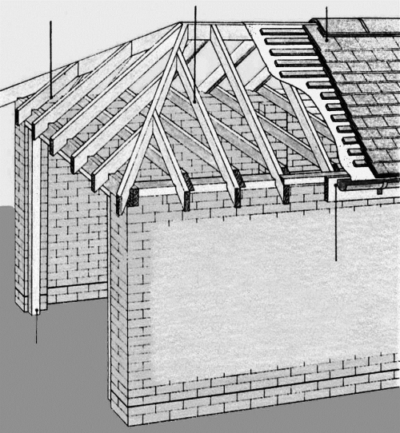
Рис. 4.1.1.1. Отдельно стоящий гараж с вальмовой крышей
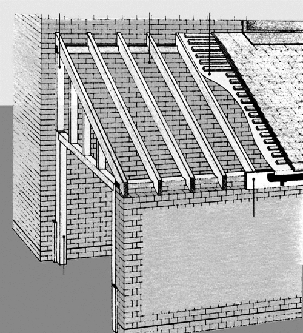
Рис. 4.1.1.2. Пристроенный закрытый гараж
Конструкция примыкающего каркасного гаража с односкатной крышей показана на рис. 4.1.1.3. Крепление каркаса к стене дома производят посредством мощной балки, на которую кладут стропила. В пазах стропил закрепляют прогоны. К прогонам привинчивают гофрированные листы из пластика, выступающие по краям примерно на 5 см. К нижним концам стропил крепят карнизную доску, а к ней — опоры водосточного желоба. Стойки каркаса гаража крепят к выступающим из фундамента и забетонированным в него стальным анкерам. На высоте порядка 60 см изнутри к стойкам крепят продольную связь, придающую каркасу дополнительную жесткость.
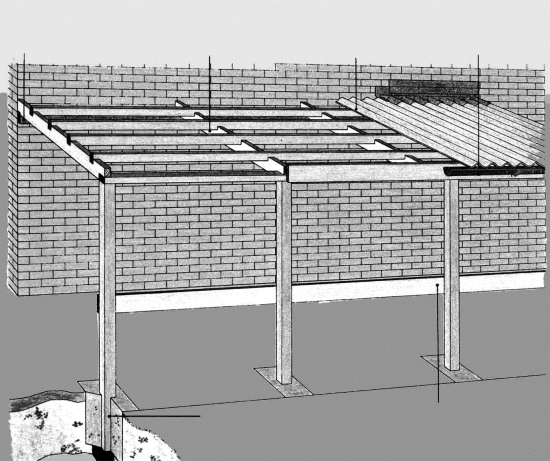
Рис. 4.1.1.3. Пристроенный карпорт
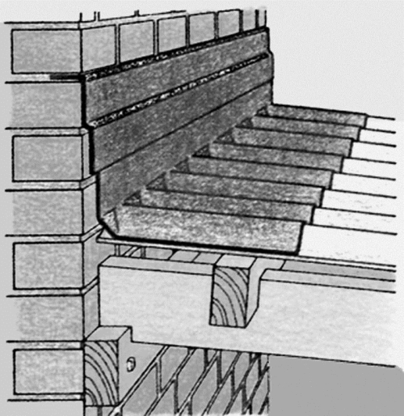
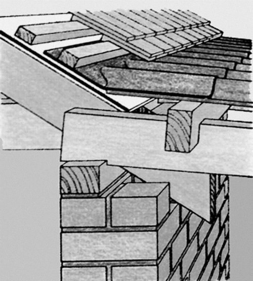
Рис. 4.1.1.4. Варианты соединения с домом крыши пристроенного гаража
На рис. 4.1.1.4 приведены два варианта крепления каркаса крыши примыкающего гаража к дому. При соединении каркаса с кирпичной стеной стропила опираются на прикрепленную к стене мощную балку. Щель между кровлей (гофрированный лист из пластика) и стеной укрывают пластиковым фартуком, верхний край которого загибают и вставляют в паз между кирпичами.
При соединении каркаса со скатом крыши дома в кровле дома удаляют не менее двух рядов черепицы. На открывшийся нижний прогон кладут стропила пристраиваемого гаража, концы которых затесаны на скос (для полного прилегания к прогону). Гофрированные листы кровли гаража вставляют под нижний ряд черепицы с последующим уплотнением щелей.
Теперь о компоновках гаражей. Именно компоновка определяется функциями гаража, которые на него возлагаются. Тут и наличие смотровой канавы, если гараж предназначен для ухода за автомобилем и его ремонта. Погреб, если таковой нужен. Стеллажи, полки или даже антресоли — для хранения всего необходимого (не обязательно связанного с автомобилем). Верстак (верстаки) — для различных работ и т. д. Все определяется потребностями.
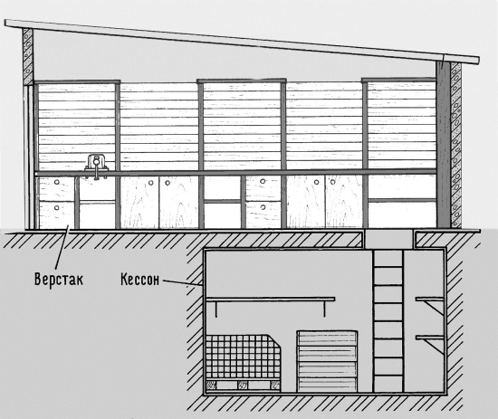
Рис. 4.1.1.5. Вариант компоновки гаража с погребом
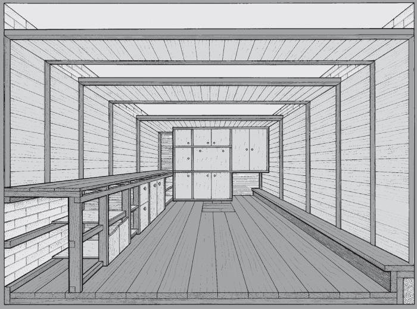
Рис. 4.1.1.6. Вариант компоновки гаражного помещения
Весомый вклад в компоновки гаражей вносит и наш менталитет, точнее, образ жизни в целых регионах, поскольку он в высокой степени определяет порядок использования гаража. И именно здесь в максимальной степени привносят свой вклад в гаражное строительство самодельщики. Вот что пишет об обустройстве своего гаража поистине «мастер золотые руки» В. Коровушкиниз г. Вологды.
Коробку гаража подрядчики делали из силикатного кирпича. Фундамент и обвязка выполнены изжелезобетонных свай. Сваи забиты на нужную глубину, а обвязка сделана на несколько гаражей, поэтому стены трещин не дают. Самому, да еще вручную, так не сделать.
Кессон (стальная емкость большого размера) я закопал в гараже так, чтобы горловина располагалась ближе кзадней стене (рис. 4.1.1.5) и можно было лазить в него, не выгоняя машину, а вдоль задней стены — сделать встроенный шкаф (стенку). В пол кессона вварил патрубок. На него навернул вентиль. Когда кессон закопали, вентиль открыл, чтобы вода, если она будет, не выталкивала кессон, а затопила его. Поверх кессона установил рельс, концы которого завел под балки и расклинил. Горловина кессона была не очень высокой, а сам он закопан глубоко, поэтому горловину пришлось наваривать.
Горловину кессона я закрываю зимой только при температуре наружного воздуха –30° С и ниже. В нем имеется две вентиляционные трубы? 100 мм, выведенные в подполье.
Для хранения картофеля и свеклы я сделал засек (овощехранилище). Пол его — деревянный, решетчатый и поднят на 30 см от основания кессона. Для установки закладных досок к стенкамкессона приварены направляющие.Стенки засека сделаны из деревянных щитов, чтобы изолировать овощи от железа. Вся конструкция — разборная и щиты такого размера, что их легко можно вынуть через горловину для просушки и дезинфекции. Летом щиты сушу, очищаю от земли металлической щеткой, обжигаю паяльной лампой и иногда мажу известью.
Для солений, варений, компотов и т. д. сделаны двухъярусные полки. Там же храню квашеную капусту, раскладывая ее в банки сполиэтиленовыми крышками. Капуста до следующей осени сохраняет свой первоначальный вкус. Морковь я мою, перебираю и укладываю в пластмассовые ящики, пересыпая каждый слой песком. Стараюсь укладывать ее так, чтобы корнеплоды не касались друг друга. Так она хранится до появления свежей, редко гниет, не прорастает и совсем не жухнет. Ящики опускаю в кессон и укладываю в штабель. Из брусков сделал ящики, которые опускаю в кессон и постепенно заполняю мелким картофелем.
Пол в гараже — деревянный из доски-пятидесятки. Переводы сделаны из швеллера, между полками которого заложил брусья 100? 100 мм. Брусья пропитал горячим битумным лаком и скрепил шурупами со швеллером.Переводы расставил по местам, выставил по уровню, подкладывая под заплечики обрезки металла нужной толщины, и настелил пол.
Чтобы не было щелей (а крепеж очень любит проваливаться именно в щели), доски припилил ручной дисковой пилой. Делал это так. Доски попарно укладывал на выровненные подкладки и закреплял. В качестве визира использовал окошечко с выступами в столе пилы. Если вы не использовали его, торекомендую сделать пробный распил по ограничителю и посмотреть, как и какой выступ соотносится с линией распила. Тогда, правильно расположив диск и визир на линии припиливания двух досок, вы получите хороший результат. Замечу, что это гораздо быстрее и лучше, чем припиливать вручную ножовкой. Не забудьте пометить порядок укладки досок.
Целиковые доски я крепил к лагам гвоздями, а доски, которые стыкуются с горловиной, уложил свободно, чтобы их можно было поднять для просушки подполья. Из таких же досок сделал крышку люка, на который навесил петли.
Слева от входа вдоль стены сделал верстак (рис. 4.1.1.6). Каркас и его столешница — из пятидесятки, дверцы — из ДСП,в ыдвижные ящики — из фанеры толщиной 10 мм, полки — из обрезков доски. На верстаке, ближе ко входу, установил малые слесарные тиски, подальше от входа — большие. В конце верстака укрепил квазитранец, к которому для хранения креплю подвесной лодочный мотор «Ветерок 8М». Вдоль задней стены сделал встроенный шкаф от пола до антресоли. Каркас его — из брусков, остальное — из ДСП.
При устройстве верстака и шкафа я допустил грубый просчет. Нижний опорный брус намертво скрепил с полом, а тот оказался подвижной опорой. В результате дверцы подверстачных шкафов перекосило, аопорный брус стенки просел вместе с полом. Выход нашел такой. Выдирать гвозди, сдвигать опорный брус в нужную сторону, чтобы выровнять дверки и заменить гвозди на шурупы; под опорный брус стенки подбить клинья, чтобы выровнять каркас по уровню.
Антресолей сделал три штуки. Две крайние примыкают к стенам. В качестве опоры применил уголок 75? 75 мм. Использовать больший не позволяют размеры кирпича, поскольку кладка сделана с перевязкой в каждом ряду. Уголок заделал в стены. Для этого в нужных местах в кирпичной кладке вышибраствор и в полученные щели вставил уголок. К передней и задней стене уголок крепил шурупами. Сделал дощатый настил, и антресоли готовы.
Передний уголок задней антресоли установлен таким образом, чтобы его проекция приходилась посредине горловины кессона. К нему с помощью крюка креплю блок или полиспаст, чтобы поднимать иопускать в одиночку тяжелые мешки и ящики.
К средней антресоли креплю петли на крючках, куда подвешиваю (чаще всего — в одиночку) прицеп. Делаю это так. Снимаю колеса с рычагами. Дышло использую как опору и приподнимаю прицеп.Удлиненными петлями подвешиваю заднюю часть прицепа. За дышло поднимаю перед прицепа и навешиваю на петли. Возвращаюсь назад и подвешиваю зад прицепа на короткие петли. Также храню и «Автобот». Только подвешиваю его между антресолями.
Стены гаража я обшил досками. Сначала в нужных местах крепил к стене бруски и на них — обшивку. Стыки закрыл накладками.Вагонкой подшил потолок и обшил гаражные ворота, используя для их утепления стекловату. Все дерево тонировал спиртовой морилкой.
Над малыми тисками установил на подвижном кронштейне лампу местного освещения для точных и мелких работ. Наэлектрощите у меня — розетки всех известных мне типов, чтобы подключать любой электроинструмент.
На стене, над верстаком, укрепил подвесные полки, которые изготовил из обрезков досок, и навесной самодельный шкаф из ДСП для хранения малогабаритного ЗИПа. Для хранения мелких вещей изготовил шкаф с выдвижными ящиками, который установил в стенке. Часть ящиков оборудовал перегородками, а часть — заполнил пластмассовыми коробочками из детского строительного конструктора и храню в них метизы. Дверца стенки открывается вниз, как дверца бара, выполняя роль столешницы.
Почему я на этом заостряю внимание? Я подбираю все, что попадается на глаза, и стараюсь найти применение чуть ли не каждой железяке. Все болты, винты, шпильки, трубки, уголки, фланцы выкручиваю, отрезаю, сортирую и прибираю. А сколько вокруг импровизированных свалок! Для кого-тоэто мусор, а для меня — источник поделочного материала, крепежа, подшипников, электродвигателей. Даже если не могу вещи сразу найти применение, а она красивая, все равно прибираю, а вдруг пригодится. И так не одно десятилетие. Представляете, сколько всего накопилось. И все это нужно разложить. Вот для чего все эти антресоли, шкафчики, кассетницы, да и сам гараж. Из 10 лет машина стояла там 2 года, а остальное время — это был склад и перевалочная база для стройматериалов.
4.1.2. Фундаменты и основанияКонечно же, любая постройка начинается с фундамента или основания. Но в данном случае начнем с очень важной оговорки. Как ничто другое, уж очень разнообразны гаражи по своей конструкции — и, в частности, они могут быть как легкими и даже сверхлегкими сооружениями, так и вполне капитальными строениями. В последнем случае мы неизбежно приходим к общим вопросам строительства, потому как возводить традиционно известные фундамент, стены и крышу гаража или любого другого строения суть одно и то же, в силу чего резонно рассматривать эти проблемы совместно со многими другими из того же ряда. Здесь же сосредоточимся на сугубо гаражной специфике, если так можно выразиться, конечно.
Во-первых, фундамента и вовсе может не быть, что в целом ряде случаев вполне допустимо для легкой малогабаритной постройки (фото 4.1.2.1). В этом случае ее можно «привязать к местности» анкерами, закрепленными в грунте, а саму постройку поставить, например, на площадке, выложенной тротуарной плиткой или кирпичом, а зачастую и просто на валунах или по гравийной подсыпке.
Во-вторых, если фундамент нужен, то выбирать его конструкцию необходимо в высшей степени тщательно. Прочтя в любой литературе указания типа «Фундамент делается так-то и так-то…» не стоит спешить с воплощением этих рекомендаций. Вот уж где стоит отмерить не семь, а семь раз по семь. Дело в том, что полной свободы выбора фундамента не существует, ибо тип его в каждом случае в основном определяется несущей способностью грунта, а также климатическими и гидрогеологическими характеристиками местности, в которой ведется застройка. Поэтому общего решения «на все случаи жизни» нет. При проектировании фундамента в каждом конкретном случае, безусловно, стоит прибегнуть к консультации специалиста, изучить, насколько это возможно, окрестные постройки, разобраться с особенностями местности. Но в конечном итоге придется выбирать из некоего количества видов фундаментов, применимых при строительстве в разных ситуациях.
Нередко фундамент под легкое строение оказывается недогруженным (в смысле ограничения по несущей способности грунта), а значит, не надо волноваться по поводу того, что постройка «потонет». Зато гораздо вероятнее, что фундаменты (а вместе с ним и постройка) могут частично или полностью «всплывать» из-за сезонной подвижки грунтов, к которой наиболее склонны глинистые и влагонасыщенные грунты (фото 4.1.2.2).
Иначе обстоит дело, если строение каменное, а если оно еще и с подвалом, то вопрос становится в высшей степени серьезным. Именно эти обстоятельства и лежат в основе выбора типа фундамента и способа его изготовления, включая операции, направленные на обеспечение минимальных касательных напряжений на элементах фундамента и защиту его от избыточной влаги. С другой стороны, желательно, конечно, чтобы фундамент не слишком удорожал все строительство, а потому вполне понятно стремление сделать его экономичным, например, столбчатым или мелкозаглубленным.
Переделки и исправления ошибок, допущенных при строительстве и выявленных в процессе эксплуатации постройки, могут обойтись значительно дороже, чем стоимость изготовления самого фундамента. И это все при том, что о фундаментах, казалось бы, известно все: и то, какие они бывают вообще, и то, на каких грунтах какие фундаменты надобно возводить, и, наконец, как это, собственно, делается.
Не секрет также, что среди строительных и ремонтных работ на загородных участках, пожалуй, самыми трудоемкими и тяжелыми являются именно фундаментные работы. Но вот что интересно: если бы все фундаменты делались правильно (включая выбор их типа и технологию изготовления), то надобность в их особенно тяжком ремонте не возникала бы, ведь изначально предполагается, что делаются-то фундаменты, как говорится, на века. Но тем не менее фундаменты, так или иначе, разрушаются и ремонтировать их приходится, причем весьма нередко.
Естественно, что раз есть явление, значит, есть и причины, которых много. Тут и элементарное неведение, и просчеты проектирования, и желание упростить и ускорить работу в целом, а зачастую и тривиальная недооценка значимости фундамента как такового не только для этапа строительства, но и для всего периода эксплуатации строения. Ну, казалось бы — чего там мудрить с фундаментом для какого-то простенького сооружения типа беседки, сарая или небольшого легкого гаража? Но ведь на что-то поставить его надо; и нередко это что-то делается, что называется, на скорую руку.
И вот сооружение воздвигнуто и вроде бы успешно эксплуатируется (фото 4.1.2.3). Но проходит время, причем весьма далекое от запланированного, и мы замечаем, что постройка перекосилась: там выпирает, тут просело, что-то отваливается — в общем «не тот коленкор». А причиной является «нештатное» поведение фундамента, который потребовал непланового ремонта, тянуть с которым, кстати, себе дороже. И тут-то мы и узнаем: «По чем фунт лиха».
Случай, можно сказать, буквально типичный: пучинистые влагонасыщенные грунты и недостаточное заглубление столбов столбчатого фундамента. Стало классикой, что со временем такие столбы выпирают из земли и процесс этот, раз начавшись, только усиливается и ускоряется. Попытки вернуть столбы на место предпринимались и в этом случае, но, естественно, лишь затянули агонию, в силу чего и решено было фундамент заменить целиком. А какой же фундамент лучше подходит в данном случае? Давно знакомый — «плавающий», именно в нем реализуется не менее известный принцип: «чем меньше закапываться, тем надежнее будет фундамент».
Именно ремонтные фундаментные работы особенно неприятны тем, что для начала требуется убрать старый фундамент. Но прежде чем вынуть столб, на который постройка опирается, под нее ставят временную опору (фото 4.1.2.4). Понятно, что опора эта должна быть чуть выше старого столба, иначе его не освободить. Совершенно не обязательно заменять каждый столб своей опорой, достаточно «вывесить» все строение на нескольких временных опорах, однако не грех напомнить, что стоять-то постройка при этом должна, что называется, «мертво». Здесь есть своя тонкость — опоры надо поставить так, чтобы они не мешали ни выемке старых столбов, ни установке новых опор.
Вытаскивание столба тоже процедура не из самых приятных, хотя и известно несколько ее способов. В данном случае часть столбов была разрушена в ямах, образовавшихся при их окапывании, а затем извлечена по кускам. Часть же столбов вытащена целиком при помощи лебедки, закрепленной за надежное дерево. Эта операция в данном конкретном случае существенно упростилась тем обстоятельством, что из-за непрерывных дождей грунт был раскисшим. Сухие глинистые грунты вообще чрезвычайно трудоемки при земляных работах, в силу чего их при этом рекомендуется специально смачивать водой.
Теперь наступает черед копания ям под опоры нового фундамента. Под вывешенным строением это само по себе «удовольствие не из приятных», но прежде еще надо решить два вопроса: сколько ставить новых опор, а соответственно копать ям и как глубоко копать каждую яму.
И тут некоторых, хотя и примитивных, расчетов не избежать, «потому что, вы заметьте-ка, очень важная наука арифметика». Здесь это сделано так. Старый фундамент, несущая способность которого оказалась вполне достаточной, состоял из десяти столбов — по пять под каждой продольной стенкой. Диаметр столбов — 10 см. Оценим пролеты нижней обвязки между опорами, что важно для нормального функционирования постройки. Длина стенки — 6 м, суммарно 0,5 м из которых приходится на опоры. Пять опор образуют 4 пролета по 137,5 см каждый (550:4).
В качестве материала для новых опор выбраны блоки размерами 20 ? 20 ? 60 см. Если непосредственно контактирующий с обвязкой блок расположить вдоль стены, на каждую опору доведется 40 см длины. Посмотрим, каков будет пролет при четырех опорах. На опоры придется 1,6 м. Пролетов будет 3, каждый величиной 147 см (4,4:3), что в данном случае было сочтено приемлемым.
Итак, ям под новые опоры нужно четыре вдоль каждой стенки. А каковы их размеры? С планом все просто. Поскольку опоры постановлено изготовить из трех блоков каждую: по два в нижнем слое и одному сверху, расположенному поперек нижних, ямы под песчаную подсыпку решено сделать 50 ? 50 см в плане.
Иначе обстоит дело с определением глубины каждой ямы, ибо участок под постройкой имеет изрядный уклон, что, кстати говоря, является скорее типичным случаем, нежели исключением. И тут возможны разные варианты. Например, поскольку глубину песчаной подсыпки было постановлено сделать не менее 50 см, можно было бы и ямы копать той же глубины. Тогда и основания опор, и днища ям лежали бы в наклонной плоскости. Значит, при выведении оголовков опор в одну горизонтальную плоскость пришлось бы делать опоры разной высоты, и, хотя это в принципе и возможно, все же было отвергнуто по целому ряду причин.
Реализован же был вариант, при котором днища ям и подошвы опор выводились в горизонтальные плоскости, разумеется, каждые в свою. Конечно, при этом расположенные выше по склону ямы пришлось копать большей глубины, но зато это сулило уменьшение трудозатрат при подноске, подсыпке и трамбовке песка и идентичность конструкции опор, что и было выбрано в качестве положительного эффекта данного варианта. А как осуществить этот вариант, учитывая, что вывешенное строение, скорее всего, будет расположено не горизонтально, в чем и нужды-то особой нет.
Поступаем так. Выбираем нижнее по склону место расположения опоры строения в качестве базы для проведения всех прочих измерений. Соответственно, здесь же располагается и базовая опора. Копаем яму глубиной 50 см. С использованием уровня проводим на боковой стенке постройки горизонтальную линию, особо четкую в местах расположения будущих опор. На дно ямы базовой опоры устанавливаем вертикально шаблон глубины — какую-либо рейку и ставим на ней риску на уровне горизонтальной линии. Все последующие ямы копаем до глубины, на которой эта риска совмещается с горизонтальной линией. В итоге получаем ямы разной глубины, но с днищами, лежащими в одной горизонтальной плоскости. Производим засыпку (об этой операции чуть ниже) ямы базовой опоры песком до уровня окружающего грунта (напомним — глубина 50 см) и, установив шаблон глубины на песок, делаем на нем вторую риску, указывающую уровень засыпки для всех остальных ям. Для контроля можно измерить расстояние между рисками — оно должно быть равно тем же пятидесяти см. Понятно, что вдоль второй продольной стенки проводятся те же операции.
За чем при этом следует проследить? Строго говоря, при вывешенной постройке в точке базовой опоры определяется такая высота опор, при которой горизонтально установленное строение в высшей по уклону точке установки не «сядет» на грунт, а, напротив, будет иметь желаемый отрыв от земли. Это и требуется обеспечить.
Теперь вернемся к песчаной засыпке, которая является важнейшей частью плавающего фундамента. Считается, что именно она обеспечивает стабильность фундамента после неизбежных межсезонных подвижек. Подвижки же эти обусловлены тем, что песок является капиллярно-пористой структурой, в силу чего в обязательном порядке впитывает воду. А вода, как известно, при замерзании расширяется, вот почему любая влагонасыщенная среда при отрицательных значениях температуры увеличивается в объеме. А отчего зависит объемное увеличение этой среды? Очевидно — от количества воды в ней, т. е. от пористости, ибо именно поры-то водой и заполняются. Таким образом, несомненно, что от подвижки фундамента песчаная подсыпка не спасает, а весь расчет ведется на то, что при оттаивании она, в отличие от глинистых грунтов, обеспечивает возвращение установленных на ней опор в стабильное исходное положение. На практике это, увы, подтверждается далеко не всегда и не со стопроцентной гарантией, т. е. носит некоторый вероятностный характер.
А что можно сделать, чтобы увеличить в этом случае вероятность стабильности фундамента?
Из сказанного выше со всей очевидностью вытекает: нужно уменьшить подвижки вообще, а значит, пористость подсыпки. Но тут нужна, как говорится, «золотая середина». Представим себе, что вместо подсыпки под опоры установили сплошной камень с нулевой пористостью. С одной стороны, он не будет разбухать при замерзании, а с другой — это будет уже другой фундамент, начисто лишенный достоинств плавающего, зато со своими недостатками, на которых здесь останавливаться не будем, но отметим, что как раз они обуславливают нестабильность столбчатого фундамента, которую мы уже наблюдали воочию. Следовательно, необходимо сохранить свойства именно подсыпки.
Несомненно, что наилучшей в плане изложенного выше является песчано-гравийная подсыпка, однако лишь в том случае, когда поры, образованные собственно гравием, заполнены песком. Но возможен, например, и вариант с захоронением в толще песка различного строительного мусора, который особенно интересен тем, что все равно нужно куда-то девать остатки старого фундамента. Как раз в этом случае их можно утилизировать с минимальными трудозатратами и максимальной пользой. Действительно, отпадает надобность в их транспортировке куда-либо, нужно лишь разделать в данном случае столбы на месте и ввести их в подсыпку (фото 4.1.2.5). Кроме того, уменьшается потребное для подсыпки количество песка и уменьшаются трудозатраты на его транспортировку. Во всех случаях, какой бы ни был заполнитель, нужно проследить, чтобы он не образовывал своей собственной пористости, т. е. чтобы все пустоты были заполнены песком.
Для этого и применяются проливка водой, штыревание и трамбование. В конечном итоге всех этих операций уровни подсыпки во всех ямах выводятся в плоскость подошв опор (фото 4.1.2.6), которые теперь можно ставить. Однако «лихо» будет не полным, если в разгар фундаментных работ не пойдут лихие дожди, как это и случилось в рассматриваемом случае. Тогда многое приходится делать заново, не зря для фундаментных работ в первую очередь требуется погода, погода и еще раз погода.
Крайне желательно как-то «замонолитить» опоры, поэтому начинаем их сооружение с изготовления железобетонной пяты, на которую ставим два блока нижнего ряда с перевязкой их цементно-песчаным раствором. На нижний ряд, также на растворе, ставим верхний блок, ориентированный вдоль длинной стенки. Естественно, что все блоки укладываются горизонтально. Но самое главное в монтаже всех опор, это выравнивание их в одну линию (когда они расположены в одном ряду) и выведение всех оголовков (верхних плоскостей верхних блоков) в одну горизонтальную плоскость.
Еще один момент, который следует учитывать, это то, что рано или поздно, для вывешивания строения приходится задействовать часть новых опор до завершения изготовления фундамента целиком, особенно если заготовленные блоки используются в качестве временных опор (фото 4.1.2.7). Альтернативой является заготовка блоков из расчета и на новый фундамент, и на временные опоры (что вряд ли резонно) или несколько увеличенный объем работы домкратом.
Завершающим этапом «эпопеи» является окончательная посадка строения на новые опоры.
Эта процедура, равно как и подъем строения, в полной мере характеризуется народной поговоркой: «Поспешишь — людей насмешишь». Дело в том, что при перекосе строения возникает крутящий в плане момент, пропорциональный величине перекоса. Разбираться с ним здесь не будем, но из практики известно, что многие встречались с ним в жизни. А потому, не желающим пополнить их ряды, следует отнестись к величине перекоса повнимательнее — несоизмеримо легче лишний раз переставить домкрат (фото 4.1.2.8), чем возвращать назад «уехавшую» постройку. Вот почему вес постройки необходимо переносить на новый фундамент постепенно, при необходимости используя для этого временные подкладки.
Кстати, о подкладках. Нередко случается, что после установки строения на новый фундамент и его выравнивания на разных опорах они оказываются разной толщины. Отчего это происходит? В первую очередь, конечно же, из-за различных ошибок измерений (глубины ям, толщины подсыпок, высоты опор). Далее идут различные нарушения технологии. В частности известно, например, что правильная подсыпка производится слоями толщиной 20–30 см с непременной влажной трамбовкой, но ведь еще надо добиться, чтобы именно так и было сделано.
Есть и еще одна коварная причина. Заключается она в том, что каркасное строение при длительном нахождении на дефектном фундаменте, претерпевает необратимые (по крайней мере быстро) деформации. Вот почему не следует по окончании установки постройки на новый фундамент стремиться убрать прокладки — тут предстоит еще разбираться с вопросом в течение какого-то времени. Кроме того, надо посмотреть на поведение нового фундамента — и здесь «возможны варианты».
Наконец, остановимся еще на одном, действительно завершающем данную историю моменте: анкерах, которые все же очень желательны, вопреки распространенному «и так сойдет». По «классике» предназначенные для предотвращения соскальзывания строения с фундамента анкеры (металлические стержни) фиксируются в фундаменте (потому и анкеры) и заводятся в отверстия, например, нижней обвязки. Но в рассмотренном выше случае этот вариант как-то уж очень неудобен. Судите сами: здесь весьма проблематичны и крепление анкеров, и сверление отверстий под них в нижней обвязке, и, наконец, сама посадка строения на опоры таким образом, чтобы анкеры пришлись в отведенные им места. Поэтому в данном случае было применено куда как более простое решение — фиксация постройки на опорных блоках от возможного смещения посредством металлических уголков, закрепляемых снизу шурупами на обвязке уже после того, как все фундаментные работы завершены.
А теперь остановимся на качестве выполнения работ при сооружении фундаментов, ибо сам по себе тип фундамента определяет еще не все. Понятно, что плохо сделать можно все, и в случае с фундаментами это опять же приводит к весьма трудозатратным последствиям, что и рассмотрим на другом конкретном примере. Столбчатый фундамент гаража прослужил несколько лет до тех пор, пока столбы не «пошли наверх» с возрастающей интенсивностью. Вот почему был сделан плавающий фундамент — примерно по описанной выше схеме. И очень скоро сказалось крайне низкое качество выполнения работ. Из-за отсутствия надлежащей трамбовки песчаной подсыпки часть опор просела сильнее прочих, из-за чего опоры попросту разорвало. При этом именно анкеры способствовали разрыву опор, ибо при подвижках всей конструкции они надежно удерживали стыки опор и нижней обвязки. Расположенные в низком (заливаемом водой) месте подошвы опор разорвало термоциклированием, причем уж очень быстро. Разница в проседании опор оказалась очень велика, в силу чего вся пристройка оказалась опертой на трех точках.
Понятно, что каркас постройки в итоге повело и понадобились многочисленные корректировки. Однако начинать надо было с устранения причин, а значит, опять с ремонта фундамента. Конечно, описанная выше схема работ вполне могла бы быть использована и здесь, но уж слишком она показалась трудоемкой для реализации в одиночку, а именно это и предстояло. Кроме того, подобная проблема возникла с одним из соседних домов, где просели уж очень массивные опоры, а потому и вынимать их не представлялось возможным. Вот почему решено было использовать другую, менее трудоемкую схему работ. Здесь также все начинается с домкрата, который располагается возможно ближе к ремонтируемой опоре. Ремонтируемый участок фундамента вывешивается тем же ломом, используемым в данном случае в качестве рычага (фото 4.1.2.9). Фиксируется вывешенный фрагмент так, чтобы подлежащий подсыпке песком объем оставался свободным, что производится, например, подкладкой камешков, кирпичного боя или, наконец, обломков раствора или бетона. То же, разумеется, когда это удается, можно проделать и с опорой целиком. Тогда ее крайне желательно подогнать как можно ближе к ее желаемому по окончании ремонта положению.
Насыпаем рядом с вывешенными фрагментами небольшими горками песок, разумеется, пока не трогая при этом элементы крепления (фото 4.1.2.10).
И поливаем водой, наблюдая, как горка сначала тает, потом превращается в воронку, а свободная полость при этом затягивается песком.
Очевидно, что при больших перепадах высот и заливкой под них песка приходится повторять несколько раз (фото 4.1.2.11).
Здесь так же в ходу выравнивающие или технологические подкладки. Окончательный же результат такого ремонта фундамента может быть вполне достойным как в случае с отдельными опорами, так и для целого ряда выравниваемых опор (фото 4.1.2.12).
А какова мораль всех этих весьма хлопотных историй? Она, в общем-то, очевидна — именно при фундаментных работах как нельзя более работает очень известное старинное правило: «Семь раз отмерь, один отрежь», чего вам и желаем.
4.1.3. Цельнометаллические конструкцииСюда прежде всего следует отнести всевозможные, промышленно изготовляемые конструкции.
Но уж если таковые имеются, то какие-то их аналоги вполне доступны для самостоятельного изготовления. Вот где сварка является основным технологическим процессом. Самостоятельное изготовление металлического гаража имеет целый ряд преимуществ, как перед приобретением промышленного аналога, так и в процессе строительства по сравнению с другими типами гаражей. Это и то, что он может иметь желаемые размеры, а не только те, что есть в продаже. И то, что строительство относительно несложно вести круглый год, в то время как, например, с бетонными работами и кирпичной кладкой зимой на открытом воздухе особенно не развернешься…
Однако чаще всего удобные гаражи из листового металла в настоящее время являются промышленными изделиями. Повсеместное распространение получили, в частности, гаражи из оцинкованной гофрированной листовой стали. Их можно заказать со сборкой и установкой (под ключ), а можно и возвести самостоятельно из поставляемого комплекта деталей. Достоинство подобного гаража и в том, что при необходимости его можно относительно легко и быстро перенести на другое место. Сравнительно несложен и монтаж ворот.
Площадка для установки гаража может быть с асфальтовым, бетонным или гравийным покрытием. Ставят гараж и на ленточный или столбчатый фундамент из бетонных блоков. Однако гораздо более основательным является литой бетонный фундамент со стальной арматурой.
Монтаж гаража обычно начинают со сборки на болтах боковых стен, которые затем соединяют с задней стеной. При установке под них подкладывают камни, чтобы потом можно было снизу прикрепить узлы, увеличивающие жесткость стен. Раму ворот крепят болтами.
Монтажные отверстия под стропила, как правило, сверлят заранее. Когда стропила установлены, на крышу затаскивают листы кровельного железа. По натянутому шнуру размечают на стропилах и сверлят отверстия для крепления кровли.
Затем устанавливают и привинчивают собранные отдельно ворота. При наличии такой необходимости гараж можно покрасить.
4.1.4. Стоянки под навесомСказать по правде, этот тип автостоянки (карпорт) в наименьшей степени отвечает нашему менталитету. Все-таки нас больше устраивает закрытый гараж, который служит и для защиты автомобиля от несанкционированных воздействий на него, и для его ремонта, и для хранения средств ухода за автомобилем, необходимого минимума запчастей, различных приспособлений и инструмента. В закрытом теплом гараже с хорошей вентиляцией кузов автомобиля сохраняется наилучшим образом. Все это правильно, но лишь с одной стороны.
А вот другой случай… Стоянка находится на загородной охраняемой территории, автомобиль регулярно обслуживается и ремонтируется на СТО в городе, где и постоянно базируется. Все преимущества закрытого гаража здесь попросту не нужны. При этом стоянка под навесом в строительстве гораздо дешевле, а с точки зрения того же ландшафтного дизайна куда как предпочтительнее: она может иметь, например, прозрачную кровлю, боковые стороны могут быть образованы перголами с вьющимися растениями, гармонично вписанными в окружающий ландшафт, и т. п. Тут просто не о чем спорить — необходима стоянка под навесом, и только она.
Но даже среди этого узкого класса гаражей существует великое многообразие, которое распространяется на размеры стоянок, их компоновки и формы, материалы и т. д. Но во многом конструкции и технологии возведения различных карпортов схожи. Как правило, это установленные на одном или двух рядах опорных столбов навесы с плоской крышей, иногда примыкающие к стене другой постройки. Сходства и различия этих автостоянок имеет смысл рассмотреть на различных примерах. Если говорить о варианте, представляющем собой весьма солидных размеров карпорт, примыкающий к углу уже существующей постройки (длина которого довольно большая — около 10 м), то элементы верхней обвязки (доски сечением 50 ? 120 мм) соединяют врубкой в полдерева. Поперечные сечения стоек, элементов обвязки и стропил выбраны с учетом высоких нагрузок на крышу при ширине пролетов между стойками 2 м и ширине навеса около 5 м. Поперечное сечение стоек — 90 ? 90 мм, длина 290 см. При устройстве кровли стропила сечением 50 ? 150 мм укладывают с шагом 1 м, обеспечивая необходимый уклон.
Строительство начинают с выравнивания площадки, на которой будет стоять навес. С помощью колышков и шнура делают разбивку и определяют места установки стоек. Затем роют ямы, устанавливают в них анкера для крепления башмаков, фиксирующих стойки, и заливают бетон. Стойки крепят к башмакам болтами, которые плотно затягивают только после окончательной выверки положения стоек.
К стойкам прилаживают временные опоры, которые позволяют зафиксировать доски верхней обвязки параллельно друг другу. Доски верхней обвязки соединяют в полдерева.
Для увеличения несущей способности конструкции между стойкой и верхней обвязкой ставят подкосы из брусков сечением 50 ? 120 мм.
Карпорты отличаются друг от друга не только конструкцией и компоновкой, но и тем, например, что они могут собираться из комплектующих деталей или монтироваться совместно с небольшим сарайчиком под одной с карпортом крышей.
Если предполагается возводить навес на два автомобиля, то можно, например, использовать стойки из бруса 120 ? 120 мм, которые в состоянии выдержать конструкцию площадью более 50 м ; ширина пролета при этом может достигать 5 м. Для стропил лучше использовать доски сечением 50 ? 150 мм.
Для защиты от атмосферных воздействий поверхность деревянных деталей покрывают специальным составом. А чтобы внешний вид гаража был более привлекательным, отдельные его элементы можно обработать пропитками разных оттенков.
С точки зрения организации красивого ландшафтного дизайна следует подобающим образом оформить и прилегающие к гаражу зоны. В результате строение, призванное выполнять определенные функции, становится и важным элементом украшения садового или дворового ландшафта.
4.1.5. Каркасные постройкиНичто так не влияет на конструкцию и технологию возведения стен, как стройматериалы. И дело даже не только в их номенклатуре, хотя и очевидно, что кладка кирпичных стен и возведение деревянного каркаса с последующей его обшивкой совершенно разные виды работ. Каркасные постройки характеризуются тем, что силовым в корпусе всей постройки является, как правило, каркас, в то время как ограждения в плане прочности выполняют вспомогательную роль и служат именно ограждениями. Такие постройки чаще всего максимально технологичны и экономичны. Кроме того, их конструкции необычайно вариабельны. Действительно, тот же навес над автостоянкой, о котором речь шла выше, является не чем иным, как простейшим (в определенном смысле) каркасом, состоящим из опорных для конструкции крыши столбов. Теперь начнем наращивать «мощь» ограждений в последовательности от «их нет вообще» до сплошных деревянных или металлических (в промежуточных вариантах, например, могут быть вьющиеся растения, различные металлические сетки, деревянные решетки и т. п.). В рассматриваемом примере различные ограждения выполняют разные функции, но незыблемым остается то, что все они, так или иначе, крепятся к стойкам каркаса, который и обеспечивает прочность всей конструкции. Поэтому прочностные требования к каркасу очень высоки. В пределе при сплошных ограждениях для получения закрытого гаража остается лишь навесить ворота.
По целому ряду причин именно для самостоятельной постройки наиболее приемлемы различные каркасные конструкции, которые потому-то и возводятся традиционно, а следовательно, о них все известно. Номенклатура материалов, а также их потребное количество определяются рядом факторов. Во-первых, конкретно выбранными для реализации конструкцией и планировкой гаража, а соответственно, и фундамента. Во-вторых, наличием покупных изделий (в частности, столярки, если таковая требуется) или изготовлении их аналогов в процессе строительства. В-третьих, рациональностью использования исходного материала (количеством неутилизируемых отходов).
Каркас должен быть добротным. Добротность же в данном случае определяется материалом и качеством работы — в основном выполнением всех необходимых соединений элементов. По поводу традиционных соединений деревянных элементов вряд ли стоит повторяться, это описано многократно. Но вот на что стоит обратить внимание: число врубок можно резко сократить или даже исключить их вовсе, если воспользоваться получившими широкое распространение за рубежом и давно появившимися у нас металлическими соединительными элементами, гамма которых весьма широка. В частности это означает, что врубки не только не надо выполнять как таковые (а это уже снижает трудоемкость монтажа каркаса), но еще и то, что в соединениях балки и стойки не ослабляются за счет потери части несущего сечения, а напротив, усиливаются металлическими соединительными элементами.
Практически все соединения традиционного каркаса могут быть выполнены подобным образом. При этом отпадают, например, сомнения в выборе типа соединений перекрещивающихся балок перекрытия, не возникает проблем со стыковкой и наращиванием балок и т. п. И тогда остается лишь вопрос выбора материала, то есть размеров элементов. Кроме этих размеров есть еще и такой изменяемый параметр, как число тех или иных элементов в конструкции.
Традиционно за возведением каркаса «коробки» постройки должна последовать установка стропил и завершение силовой конструкции крыши.
При правильной последовательности строительства, кроме прочего, существенно упрощаются монтаж стропил и основной объем кровельных работ, которыми, как правило, завершается сборка каркаса. Теперь просто необходимо как можно быстрее обшить постройку снаружи, что позволит заняться внутренней отделкой и дальнейшим обустройством независимо от погоды.
Но что особенно привлекает в каркасных постройках, так это то, что материалы в тех же каркасе и ограждениях могут использоваться в совершенно различных сочетаниях: деревянный каркас и стальные ограждения (обшивка), стальной каркас и деревянная обшивка, да вообще любой каркас с любой обшивкой. Так во времена тотального дефицита стройматериалов один умелец построил на своем садовом участке прекрасный банно-гаражный комплекс с жилой комнатой со сварным из металлического уголка каркасом, с закрепленными к уголкам деревянными брусками, на которых крепилась наружная обшивка из плоских асбоцементных листов.
Гараж-пристройка.Внешне такой гараж выглядит вполне традиционно для дачного строительства. Но особенности в нем, разумеется, есть, и первая — что он построен по технологии деревянного профиля (фото 4.1.5.1). Наружные ворота выполнены «глухими» снаружи, то есть не имеющими ни внешних запоров, ни традиционной калитки. Следовательно, такие ворота снабжены лишь внутренними запорами. Минимизация занимаемой площади и затрат (как по материалам, так и по трудоемкости изготовления) определяется уже выполнением гаража в виде пристройки к дому. Из компоновки следует, что строительство состоит из возведения стенки, параллельной наружной стене дома, сооружения воротного фасада и односкатной крыши. Еще надо как-то разобраться с задней (обращенной во двор) стенкой. Стало быть, удовлетворение остальных требований к гаражу зависит от того, как это сделать. Вот на этом и остановимся подробней несколько ниже.
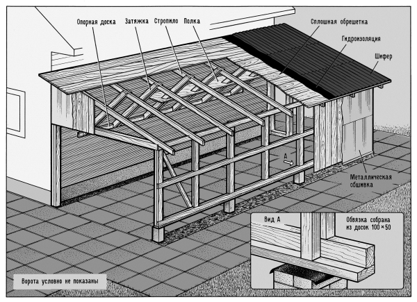
Рис. 4.1.5.1. Верхний конец стропил соединяется внахлест с балками каркаса дома
Строительство следует начать с изготовления фундамента под стенку гаража, параллельную стене дома и удаленную от нее на расстояние, равное планируемой ширине гаража. Изготовление и монтаж каркаса гаража начинаем с нижней обвязки. Ее удобно выполнить в виде деревянного уголка, который сразу же после сборки можно уложить на столбики фундамента. Угловые стойки изготавливаются также в виде уголка из двух разновеликих досок, в то время как промежуточные (боковые) стойки выполняются в виде Т-образного профиля. Верхняя обвязка делается просто из доски «на ребро», аналогично выполнены и стропила, которые устанавливаются на верхнюю обвязку с помощью паза на нижнем их конце. Верх-ний конец стропил соединяется внахлест с балками каркаса дома, специально выпущенными наружу. Сборка каркаса гаража завершается монтажом балок, замыкающих оба фронтона.
При ширине гаража от 3 м и более недостаточно жесткие стропила (кроме фронтонных) могут быть подкреплены силовыми подкосами, которые не только придают интерьеру гаража особый шарм, но и являются весьма функциональными. Эти затяжки изготавливают из досок толщиной 50 мм, идущих на каркас, и обшивочной доски (толщиной 25 мм). Посредством паза, имеющегося на верхнем конце, затяжки соединяются со стропилами, а нижние концы всех затяжек опираются на горизонтально пришитую к внешней стене дома доску (фото 4.1.5.2).
Собранный каркас можно обшивать обрезными досками: боковую стенку — вертикально, а стропила — располагаемыми вдоль гаража. При обшивке доски желательно сплачивать как можно сильнее. Доступные взору изнутри гаража поверхности всех досок (включая обшивочные) следует тщательно прострогать. Тогда обрешетка образует красивый потолок, а обшивка стенки является и внутренней отделкой, и основанием для наружного покрытия, в данном случае кровельным железом. При этом длина досок выбирается такой, чтобы их нижние торцы не доходили до уровня грунта на 100–150 мм. Образовавшийся нижний зазор перекрывается металлической обшивкой. По обрешетке настилается кровля любым имеющимся в наличии материалом. Фронтоны обшиваются аналогично боковой стенке, при этом утилизируются остатки и досок, и кровельного железа. Поэтому фронтоны обшиваются в последнюю очередь.
Наружные ворота могут быть изготовлены традиционным способом, например, сварными из уголка и листовой стали. В этом случае целесообразно металлические ворота смонтировать на деревянной конструкции гаража посредством дополнительного металлического уголка. При этом сочленяемые части петли закрепляются сваркой на дополнительном уголке и уголке воротной створки, а створка монтируется на каркасе в сборе с дополнительным уголком путем крепления последнего шурупами (порядка 60 ? 5). В результате не достроенным оказывается лишь «дворовый» (обращенный во двор) фасад.
Именно здесь-то и кроется второе, более радикальное отличие, и заключается оно в снабжении дворового фасада воротной створкой, аналогичной той, что устанавливается на весьма распространенных нынче гаражах-«ракушках». Разница лишь в том, что в открытом положении створка не должна убираться полностью, а фиксируется в положении, когда она образует козырек (рис. 4.1.5.2). Не станем подробно останавливаться на конструкции воротной створки, ибо она широко доступна для обозрения (гаражи-«ракушки»). Заметим лишь, что оптимальным является ее изготовление из гофрированного кровельного железа (металлического «шифера»); в противном случае строителю придется бороться с излишним весом створки и ее недостаточной жесткостью.
Рассмотрим подробнее систему подвески и фиксации створки, поскольку ее достоинство — чрезвычайная простота изготовления и монтажа. Основой системы явились направляющие (рис. 4.1.5.3), выполненные из швеллера (сваренного из двух уголков) с приваренными к нему по концам уголками-фиксаторами крайних положений. Направляющие могут быть снабжены также приваренными уголками с закрепленными на них осями, на которых установлены с возможностью вращения профилированные направляющие ролики. Аналогичным узлом (роликом на оси) снабжена створка. На рисунке видно, что уголок створки в процессе ее открытия опирается на направляющий ролик. Для реализации кинематической схемы движения и фиксации створки направляющие должны быть закреплены на силовых элементах каркаса (шурупами 5 ? 60) строго параллельно друг другу в одной горизонтальной плоскости.
Фиксация створки как в положении «открыто», так и в положении «закрыто» происходит «сама собой» при соблюдении указанных на рис. соотношений размеров «а» и «b», а также «с» и «d». При этом размеры «а» и «b» определяют положение опорного ролика на направляющей, а «с» и «d» — положение упоров на стойках воротного проема. Закрытая воротная створка может качаться вокруг этих упоров как на оси, а потому запираются ворота фиксацией нижней кромки воротной створки.
Помимо всего прочего, отметим, что вся конструкция унифицирована по исходному материалу — уголку. Из него выполнены и наружные ворота, а это в конечном итоге удешевляет и упрощает строительство в целом. Воротная створка может быть снабжена наружными запорами (при выполнении во всю ширину дворового фасада), но может сочетаться и с входной дверью, что иногда предпочтительнее.
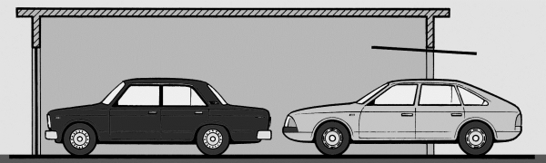
Рис. 4.1.5.2. Схема расположения двух автомобилей в гараже с двумя воротами
По поводу пола следует заметить, что поскольку он никак не завязан конструктивно с другими элементами гаража, его можно сделать любым: земляным, насыпным (гравием с песком), кирпичным, из тротуарных плит и т. п. Важно при его сооружении выдержать одно условие — не слишком поднимать уровень пола над естественным уровнем грунта. Может возникнуть вопрос: а стоит ли овчинка выделки? Практика эксплуатации описанного гаража в течение ряда лет показала — безусловно, стоит. Во-первых, оказалось, что при открытой дворовой воротной створке в гараж легко помещается два автомобиля, при этом первый въехавший в наружные ворота автомобиль частично выезжает из внутренних ворот (во двор), оказываясь при этом частью в гараже, а частью — под навесом (наружные ворота закрываются).
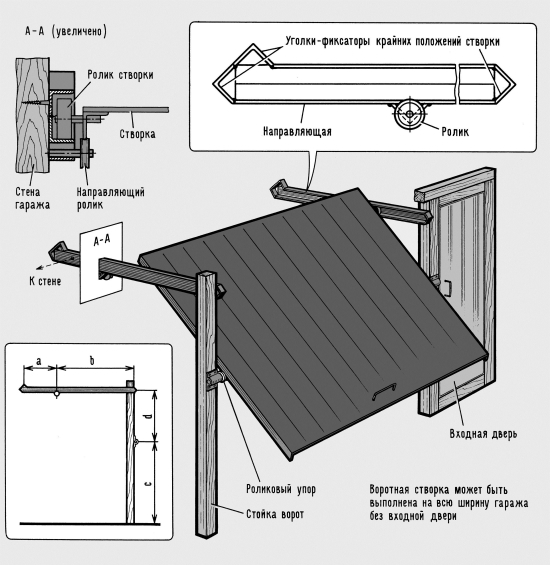
Рис. 4.1.5.3. Система подвески и фиксации воротной створки
Во-вторых, при открытой дворовой створке и при отсутствии пиковой нагрузки гаража, свободная его площадь прекрасно используется, например, для хранения с частым использованием тяжелого оборудования, как-то сварочного трансформатора, бетономешалки, насоса и т. п. Установленные на тележке агрегаты буквально «выдергиваются» из гаража в случае нужды в них, благо гараж, в отличие от других надворных построек, не имеет поднятого над землей пола. Иными словами, свободная площадь гаража используется как крытая часть двора со всеми вытекающими отсюда возможностями.
В-третьих, сооруженные на подкосах полки очень удобны для хранения длинномерного стройматериала (опять же при загрузке-выгрузке его через дворовые ворота). В-четвертых, уникальную возможность предоставляет такой гараж в качестве мастерской для обработки длинномерного материала (конечно, при отсутствии в нем автомобиля), ведь поставив посреди гаража станок и открыв наружные и внутренние ворота, вы имеете крытый «цех», через который протаскиваете материал любой, практически необходимой длины (рис. 4.1.5.4). Думается, что каждый застройщик, построив такой дачный гараж, сможет пополнить список его достоинств, найдя другие варианты полезного использования.
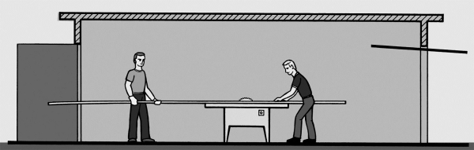
Рис. 4.1.5.4. Гараж в качестве крытого «цеха», через который протаскивается материал любой, практически необходимой длины.
С помощью гаража можно решить не только перечисленные, но и другие проблемы. Чего стоит только выбор места для гаража вкупе с его конструкцией. Вот что пишет об этом автор и исполнитель очень многих оригинальных идей в области самодеятельного строительства А.И. Плотниковиз Смоленска.
Не собирался я строить гараж на даче — места нет. Необжитой земли остался один «клочок с пятачок», да и тот в овраге. Засыпешь его — лишние хлопоты: весной талой воде стекать некуда. К тому же стройматериалов, как говорится, «кот наплакал», а рабочих рук и вовсе только две. Но дело к зиме, а стальному дружку-работяге нужна крыша.
Вот, исходя из этого, и пришлось изобретать максимально простой и дешевый вариант. Что из этого получилось — показано на рисунках рис. 4.1.5.5 и рис. 4.1.5.6. Это «шалаш» на облегченном «плавающем» ленточном фундаменте. Выбор конструкции типа «шалаш» очевиден: минимум материалов при максимальной прочности. С фундаментом решил просто. Суммарный вес всех элементов конструкции вместе с автомобилем не более 6000 кг. При этом площадь подошвы фундамента для размеров, указанных на рис. 4.1.5.7, больше 7 м . Получается нагрузка на грунт меньше 0,1 кг/см . Это позволило упростить конструкцию фундамента и существенно сократить затраты материалов и времени на его сооружение. Учитывал также то, что гараж расположен на пологом уклоне овражка, и, следовательно, лишняя влага будет эффективно удаляться из зоны промерзания грунта.
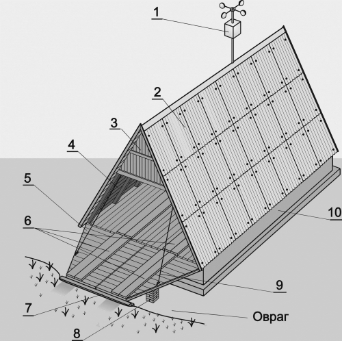
Рис. 4.1.5.5. Общий вид гаража:
1 — ветроэлектрогенератор переменного тока; 2 — шиферная кровля; 3 — фронтон; 4 — обшивка стен (обрешетка кровли); 5 — въездные ворота-трап; 6 — усиливающий настил трапа и пола; 7 — опора трапа на краю оврага; 8 — дополнительная опора трапа; 9 — трос системы компенсации веса створок ворот; 0 — плавающий фундамент
Делал фундамент следующим образом (рис. 4.1.5.7). По всему периметру будущего фундамента (с учетом внутренних перемычек) копал траншею сечением примерно 400? 400 мм. Затем заполнял ее песком, который тщательно утрамбовал и пролил несколько раз водой. Поверх песка расстилал рубероид 2 и по нему на цементном растворе выкладывал подошву 3 в один или два ряда кирпича. Верх подошвы выравнивал цементной стяжкой и на него наклеивал битумом еще один слой гидроизоляции 6 (рубероид). Затем в / кирпича возводил ленточную стенку 5 по периметру и внутренние перемычки 8 с пропусками шириной не менее 800 мм под смотровую канаву. В торцевых стенках сделал вентиляционные окна 7 (шириной и высотой в один кирпич). Верх кладки выравнивал слоем раствора минимальной толщины и на него настилал два слоя рубероида 4 под деревянные конструкции. На этом, собственно, сооружение фундамента и заканчивается. Несмотря на предельную простоту плавающего фундамента, тенденции «утонуть» за несколько лет эксплуатации у него не было.
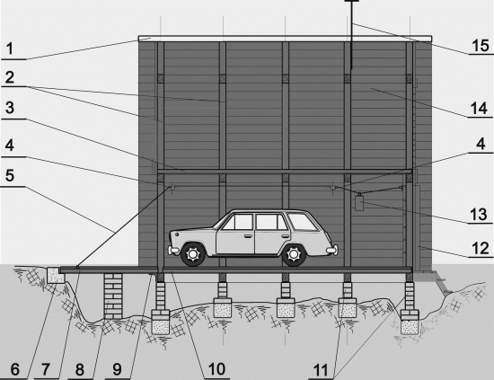
Рис. 4.1.5.6. Устройство гаража и основные элементы конструкции:
1 — коньковый брус; 2 — несущие дельтаобразные фермы; 3 — настил пола второго этажа; 4 — ролики проводки троса; 5 — трос системы компенсации веса створок ворот; 6 — опора на краю оврага; 7 — въездные ворота-трап; 8 — дополнительная опора; 9 — опорный уголок; 10 — настил пола первого этажа; 11 — ленточный «плавающий» фундамент; 12 — металлическая сдвижная дверь; 13 — противовес; 14 — обшивка стен; 15 — опора ветрогенератора
Дальнейшее строительство велось блочным способом силами одного человека. Сначала необходимо было изготовить пять несущих ферм (рис. 4.1.5.8). Ферма А — 1 шт., Б — 3 шт. и В — 1 шт. Все фермы изготавливались на земле в горизонтальном положении (сначала одна, а затем все остальные по ней, как по кондуктору) из бруса сечением 50? 80 мм. Угловые и все прочие соединения брусьев выполнены на кницах 3 (косынках) из листового алюминия толщиной 1,5…1,8 мм с помощью шурупов или болтов. Здесь же, на земле, фермы полностью оснащались фронтонами, дверьми, окнами и другими деталями (на время монтажа ферм наиболее тяжелые детали снимались и затем вновь устанавливались уже на месте).
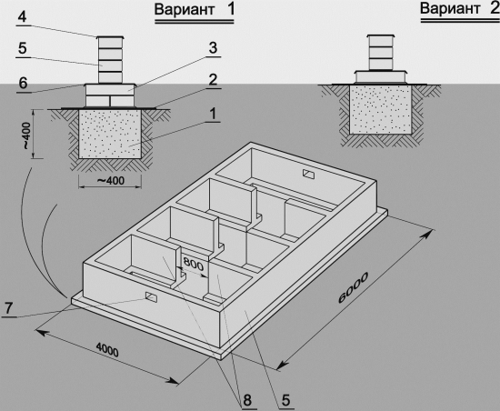
Рис. 4.1.5.7. Ленточный «плавающий» фундамент:
1 — траншея, заполненная утрамбованным песком; 2 — гидроизоляция, рубероид; 3 — опорная подошва (пята) фундамента; 4 — толь, рубероид, 2 слоя под деревянные конструкции; 5 — ленточная кладка в / кирпича; 6 — дополнительная гидроизоляция, рубероид; 7 — вентиляционные окна; 8 — перемычки с пропусками под смотровую канаву
Готовые фермы А, Б и В выставлялись вертикально на фундаменте, расчаливались подкосами и скреплялись между собой технологическими стяжками по месту настила пола первого и второго этажей. В таком положении сначала зашивались стенки 2 (рис. 4.1.5.9) обрезной доской толщиной 25 мм. Доски я прибивал последовательно, начиная с нижней, вверх до уровня второго этажа. Затем снимал временные подкосы и стяжки и настилал доски пола 3 и 6 толщиной 45 мм. На этом этапе строительства достаточно навесить двери и ворота (рис. 4.1.5.10), укрыть стенки рубероидом, и гараж уже можно закрыть, хотя бы временно.
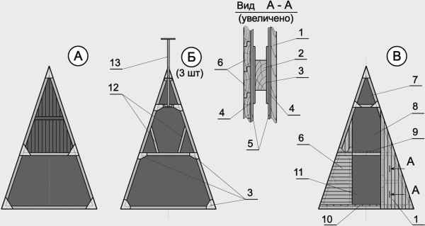
Рис. 4.1.5.8. Несущие фермы:
А — ферма лицевого фронтона (со створками въездных ворот); Б — рядовые фермы, 3 штуки (дополнительные подкосы 12 и опора генератора только для фермы Б3); В — ферма фронтона (с окном и дверными проемами на уровне первого и второго этажей);
1 — внешняя вертикальная обшивка, доска 20 мм; 2 — каркас, брус сечением 50? 80 мм; 3 — кницы (косынки), алюминий 1,5…1,8 мм; 4 — гидроизоляция (толь, рубероид); 5 — металлический лист; 6 — внутренняя горизонтальная обшивка, доска 20 мм; 7 — окно; 8 — проем для двери второго этажа; 9 — настил пола второго этажа; 10 — усиленный настил пола первого этажа; 11 — проем для двери первого этажа; 12 — дополнительные подкосы (только для фермы Б3); 13 — опора ветрогенератора
Верхний ярус стен можно было бы зашивать так же отдельными досками, как и нижний, но пользуясь лестницей. Мне это показалось слишком хлопотным: четыре-пять раз подняться-спуститься по лестнице только для того, чтобы прибить одну доску. Поэтому верхнюю часть стен я накрывал целыми щитами, сколачивая их на земле. Заканчивается возведение стен (крыши) обрезкой карнизной части и оклеиванием их рубероидом.
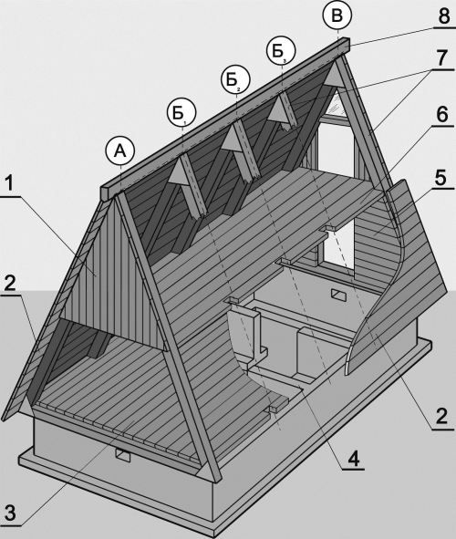
Рис. 4.1.5.9. Монтаж основных элементов конструкции:
1 — обшивка лицевого фронтона, доски 20 мм; 2 — обшивка стен, доски 25 мм; 3 — настил пола первого этажа, доски 45 мм; 4 — фундамент; 5 — усиленная обшивка фронтона; 6 — настил пола второго этажа, доски 45 мм; 7 — несущие фермы, брус сечением 50? 80 мм; 8 — коньковый брус сечением 50? 80 мм
Далее — очередь въездных ворот. Общий вид и принцип действия показаны на рисунках 1 и 2, а особенности конструкции — на рис. 6. Ворота (они же въездной трап) состоят из двух половинок, закрепленных шарнирно на несущей ферме (см. рис. 4.1.5.8). В открытом положении створки ворот 7 (см. рис. 4.1.5.6) опираются одним концом на стальной уголок 9, а другим — на бетонную опору 6 на противоположной стороне овражка. На дне оврага возведена дополнительная опора 8. С помощью троса 5 и противовеса 13 вес каждой створки скомпенсирован таким образом, что опускаются и поднимаются ворота без каких-либо усилий, но только изнутри гаража.
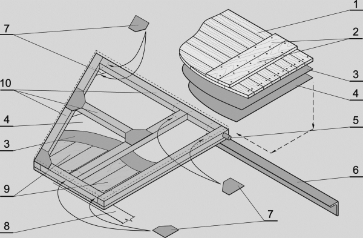
Рис. 4.1.5.10. Въездные ворота-трап:
1 — настил трапа, доски 25 мм; 2 — усиление настила трапа, доски 40 мм; 3 — гидроизоляция (толь, рубероид); 4 — металлический лист; 5 — поворотный шарнир; 6 — опорный уголок; 7 — кницы (косынки), алюминий 1,5…1,8 мм; 8 — опора на краю оврага; 9 — внешняя обшивка створки ворот, доски 20 мм; 10 — каркас, брус сечением 50? 80 мм
С внешней стороны у ворот нет ни ручек, ни запоров. Обшивка ворот сделана усиленной (см. рис. 4.1.5.10). Каркас из бруса сечением 50? 80 мм (собирается он так же, как и несущие фермы с помощью книц 7 на шурупах или болтах) сначала обшивается снаружи и изнутри стальными листами 4. Листы металла накрывают в один слой листами гидроизоляции 3 и зашивают досками 1 и 9: с внешней стороны — толщиной 20 мм, с внутренней стороны — 25 мм. Такую же конструкцию имеет и обшивка фронтона по уровню первого этажа фермы В (см. рис. 4.1.5.8, позиции 1…6). Дверь первого этажа 12 (см. рис. 4.1.5.6), также из соображений безопасности, металлическая.
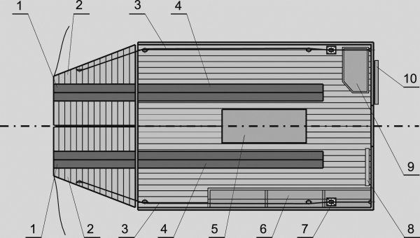
Рис. 4.1.5.11. Внутреннее устройство гаража:
1 — дополнительное усиление настила трапа; 2 — настил трапа; 3 — проводка троса; 4 — дополнительное усиление настила пола; 5 — смотровая канава; 6 — двухъярусный стеллаж; 7 — противовес; 8 — стеллаж для инструментов; 9 — верстак; 10 — металлическая сдвижная дверь
И, наконец, заключительный этап — кровля. Заниматься кровлей пришлось на следующий год, весной.
Внутреннее устройство гаража также простое (рис. 4.1.5.11): смотровая канава 5, двухъярусный стеллаж для автопринадлежностей 6, верстак 9 и небольшой стеллаж для инструментов 8. Второй этаж — чисто складское помещение. У меня там хранятся швертбот и всевозможные хозяйственные мелочи.
Завершая разговор о каркасниках, нельзя не заметить, что в строительство пришли весьма технологичные индустриальные металлические каркасы, используемые как при сооружении промышленных и жилых зданий, так, естественно, и гаражей (фото 4.1.5.3). Очевидно, что сооружение гаража с использованием подобного каркаса упрощается многократно.
4.1.6. Капитальные строенияКапитальные гаражи мало чем отличаются от прочих капитальных строений, и как уже говорилось выше, раз уж мы нацелены на гаражную специфику, то общих вопросов коснемся лишь в самой малой степени. С точки зрения же гаража первым его признаком является наличие гаражных ворот, а значит, и большого воротного створа в стене. Для каркасной, например, конструкции наличие такого створа представляет особую проблему, ибо надо обеспечить жесткость стены, содержащей воротный створ. Несущие же стены этой проблемы лишены.
Несущие стены.Их ярким примером являются стены кирпичные (фото 4.1.6.1) или сложенные из различных блоков (бетонных, пенобетонных, керамических), которые во многом хороши. Являясь ограждением, они служат и силовым основанием для крыши, а в процессе эксплуатации постройки выдерживают все приходящиеся на нее нагрузки, противостоят атмосферным влияниям и зачастую несут ответственность за внешний вид строения.
Но несущими бывают не только каменные стены. Напротив, выбор материалов для возведения несущих стен максимально велик — тут и обыкновенный грунт, и солома, и глиносырцовые материалы, и дерево в самых разных проявлениях, и различные натуральные и искусственные камни (кирпич лишь частный случай), да и металлы тоже. Тут есть из чего выбирать, и каждый может это делать, исходя из своих возможностей и склонностей.
Крыша.Крыша гаража, в том числе и капитального, очень часто делается плоской, покатой в том или ином направлении. Этому есть серьезные причины: конструктивно такая крыша наиболее проста и технологична. При индустриальном строительстве, например, достаточно положить сверху стандартную железобетонную плиту (плиты) и крыша в основном готова. В самостоятельном строительстве в настоящее время такая возможность тоже не исключается, но есть еще и масса других — вплоть до изготовления сварной цельнометаллической крыши.
Выбор кровельных материалов для плоской крыши, пожалуй, максимально широк. Она практически обязательна для пристроенных гаражей и хороша для отдельно стоящих. Но как раз в последнем-то случае крыша вообще может быть любой, в частности далеко не самой простой вальмовой. Широко распространены конструкции, универсальные в том смысле, что они сочетаются с любым типом коробки постройки.
На выбор конкретного типа обрешетки решающее влияние оказывает кровельный материал. Так, например, монтаж гофролиста или металлочерепицы ведут по брускам, расположенным с шагом 300–400 мм, в то время как мягкая черепица типа «Ондулин» требует уже сплошной обрешетки. Для обеспечения максимально возможного срока службы кровли не следует забывать о защите внутренней стороны покрытия от конденсата, для чего имеется достаточно средств.
Возможны как минимум два варианта изготовления кровли: с утеплением и без него. В первом случае конструкция более традиционна: к нижней части боковых граней стропил прибиваются черепные бруски, на которые короткими досками настилается наклонный потолок, на него кладется утеплитель, который сверху закрывается обрешеткой, например, из необрезных досок. Можно, конечно, в этом же случае потолок нашить по нижним граням стропил и длинными досками. Второй случай интересен тем, что функции обрешетки и потолка выполняет один и тот же дощатый настил поверх стропил, что приводит к экономии материала. Естественно, что доски простругиваются со стороны, обращенной внутрь объема. Поскольку в объеме при этом остаются и стропила, их также следует обработать (до установки).
Прозрачные кровельные покрытия, появившиеся в последнее время, — альтернатива традиционным крышам небольших построек, в частности, гаражей. Освещенность помещения при такой кровле будет достаточной для того, чтобы днем в них можно было работать без дополнительных источников света.
Чаще всего стропила примыкающих гаражей одним концом опираются на брус, прикрепленный к несущей стене дома, а другим — на стену пристройки.
Крыша с кровельным покрытием из прозрачного пластика годится не только для закрытых помещений, но и очень удобна для открытых карпортов. Такие крыши с наклонным скатом после установки стропил можно сразу крыть прозрачным пластиком и без обрешетки.
При работе с кровельными покрытиями из прозрачного пластика следует руководствоваться инструкцией производителя и использовать только зарекомендовавшие себя монтажные материалы.
Панели из прозрачного пластика обрезают пилой с мелким зубом. Кровельные листы ни в коем случае нельзя туго приворачивать шурупами, так как пластик имеет коэффициент линейного расширения гораздо больший, чем древесина, например. Поэтому при больших перепадах температуры жестко закрепленные листы будут деформироваться и трескаться. Места крепления рассверливают и отверстия зенкуют под головки шурупов. Не рекомендуется использовать сверла по дереву, так как можно расщепить пластик.
Следует учитывать и так называемый парниковый эффект, когда солнечные лучи, проходя сквозь прозрачную кровлю и отражаясь от стен помещения, нагревают его. Особенно быстро нагреваются поверхности стропил и обрешетки. Пластик начинает расширяться. Особенно это заметно в местах контакта его с другими материалами. Чтобы уменьшить воздействие солнечного тепла, желательно покрасить стропила и обрешетку в белый цвет или оклеить их алюминиевой фольгой.
Особое внимание нужно обратить на гидроизоляцию примыкания крыши к стене. Кроме того, при покупке комплекта необходимо приобрести соответствующий набор стыковых и уплотнительных профилей. Прозрачные плиты отличаются высокой атмосферостойкостью и с годами не выцветают. Профили кровельной системы могут быть и в специальном исполнении, например, для использования в качестве соединительных (между конструкциями) или завершающих элементов.
Полы.Вот уж где между крайними вариантами: пол земляной (вроде бы и делать ничего не надо) и, например, пол покрыт кафельной плиткой по бетонному основанию — действительно «дистанция огромного размера». Попросту говоря, пол в гараже может быть буквально любым: грунтовым, мощенным кирпичом или тротуарной плиткой, бетонным с любым покрытием или без такового, деревянным очень разного исполнения, современным наливным (фото 4.1.6.2) и т. п. И, как обычно в таких случаях, все сводится к выбору варианта для его воплощения. А любой выбор, естественно, производится по каким-то критериям.
И вот тут гараж к общестроительным критериям (стоимость материалов, их технологичность, трудоемкость применения, эксплуатационные свойства) добавляет свои — специфические. Во-первых, он требует обеспечения повышенной пожарной безопасности, но об этом предстоит особый разговор. Во-вторых, очень многое зависит от того, отапливаемый ли или нет строится гараж — просто надо учитывать, что в не отапливаемом гараже, например, бетонный пол всегда, а особенно зимой, будет холодным. В-третьих, следует обратить внимание на то, что соотношение площади воротного проема и объема закрытого гаража очень велико, особенно в случае малогабаритного индивидуального гаража. Это приводит к тому, что за время въезда-выезда из гаража объем воздуха в нем практически полностью может смениться на атмосферный, в том числе и холодный. В этом случае холодный пол выстывает еще больше.
Перечень специфических требований именно к гаражному полу можно было бы и продолжить, например, он должен способствовать снижению избыточной влажности воздуха в гараже (для обеспечения лучшей сохранности автомобиля) и быть гигиеничным — тоже по многим основаниям. Но давайте на этом остановимся и обратим внимание на то, что различные требования удовлетворяются по-разному. Например, гигиеничный и во многих других отношениях хороший бетонный пол будет «уютным», особенно зимой, только в отапливаемом гараже, причем в хорошо отапливаемом. Но очень может быть, что именно этот вариант как раз устраивает строителя будущего гаража. Получается, что многочисленные и зачастую противоречивые требования к гаражному полу могут быть ранжированы по приоритетам, которые определяет для себя сам застройщик. Проще говоря, все опять же сводится к всеобъемлющей формуле: «Чего хотеть и за какую цену?»
Водостоки.Любая грамотно возведенная постройка, а уж капитальное строение в обязательном порядке, оборудуется водостоками. Задачей водостоков (сливов) является сбор и отвод атмосферной влаги как можно дальше от площади, занимаемой строением. Дело это совсем не пустяковое, особенно на пучинистых грунтах, ибо напрямую связано со сроком службы как главным образом фундамента, так и постройки в целом.
Традиционно при качественном изготовлении металлические детали водостока в единое целое соединяют пайкой. Но с появлением специальных клеев работа с металлом упростилась. Кроме того, известны достоинства водосточных систем из пластика, которые, пользуясь соответствующими инструкциями, относительно не сложно собрать и установить собственными силами.
Зарубежные фирмы-производители, как правило, поставляют в продажу целую систему элементов водостока на основе металлических (в том числе из меди) или пластиковых водосточных желобов, сборка которых осуществляется и на пайке, и с помощью специальных клеев-уплотнителей. На нашем рынке эти технологии известны как системы под различными фирменными названиями. В комплект монтажа входят все необходимые детали и материалы, в частности, трубы (стояки), крепежные кронштейны, скобы и хомуты, конусные патрубки, желоба длиной 2 и 3 м (фото 4.1.6.3). И даже бывшая некогда единственной в своем роде оцинковка нынче радикально преобразилась (фото 4.1.6.4). Резать трубы и желоба можно обычной ножовкой по металлу. Для гнутья скоб-кронштейнов лучше всего применять специальные клещи, удобные тем, что, настроив их однажды на определенный размер и угол изгиба (с учетом наклона скатов крыши), ими можно обработать весь комплект кронштейнов.
4.1.7. ВоротаК гаражным воротам, которые являются специфическим элементом гаража, предъявляются, соответственно, и особые требования. Прежде всего они призваны исключить всякое несанкционированное проникновение внутрь гаража, а также должны способствовать поддержанию внутри помещения необходимого микроклимата. Отсюда вывод — ворота для гаражей должны быть достаточно прочными, плотно прилегать к раме, обеспечивать надежную тепло— и гидроизоляцию, сохранять нормальную работоспособность в конкретных климатических условиях, иметь четко отлаженные механизмы и надежную защиту от взлома, быть удобными в пользовании, иметь привлекательный внешний вид.
Тип и конструкцию гаражных ворот, включая их размер, необходимо выбрать еще до начала строительных работ — в ходе проектирования. На габариты ворот, как, впрочем, и гаража в целом, особенно влияют размеры автомобиля, на который гараж и рассчитывается. В большинстве случаев ширина гаражных ворот составляет не менее 2,5 м, а высота — 1,8–2,5 м.
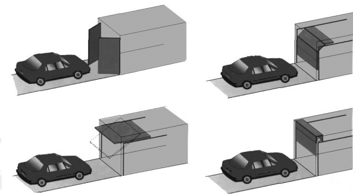
Рис 4.1.7.1. К традиционным, распашным воротам в настоящее время добавились сдвижные, складывающиеся, рулонные, подъемно-поворотные и секционные.
По конструкции ворота бывают деревянные, металлические с комплектующими из различных материалов, утепленные и неутепленные. К традиционным, механическим, которые отпираются и запираются вручную, в настоящее время добавились ворота с автоматическим приводом, зачастую и с дистанционным управлением. Кроме того, они могут быть распашные, сдвижные, складывающиеся, рулонные, подъемно-поворотные и секционные.
На конструкцию ворот оказывают влияние даже такие факторы, как сезонность их эксплуатации, в частности снег зимой либо должен как-то учитываться при открывании ворот, либо регулярно убираться опять же без нарушения их работоспособности.
Несущей конструкцией любого типа ворот является рама (коробка), которой поэтому уделяется особое внимание. От ее прочности зависят надежность и долговечность ворот. Коробку для деревянных ворот можно изготовить из деревянных же балок подходящего сечения. Крепится такая коробка в воротном створе, например, кирпичной кладки гвоздями к деревянным пробкам, заделанным в стену, а также при помощи дюбелей. Деревянную коробку желательно усилить металлическими накладками.
Более прочными являются рамы, сваренные из профильного железа. Такие рамы крепятся к стене при помощи уступов, между которыми помещают кирпич во время кладки или посредством сварки с внедренными в кладку металлическими стержнями.
Наиболее традиционной является конструкция деревянных ворот. В частности створки ворот могут быть выполнены в виде дощатых щитов, скрепленных на шурупах с помощью поперечных и наклонных связей из досок той же толщины. Жесткость и прочность ворот значительно повышаются, если обшить их кровельной сталью. Изготавливаются и деревянные распашные ворота, обшитые вагонкой с обеих сторон. Для изготовления каркаса створок используют бруски подходящего сечения, а затем каркас обшивают вагонкой. При этом рисунок полотна может быть различным. Такие ворота можно утеплить, заполнив полость каркаса любым плиточным или рулонным утеплителем. Сверху полотно ворот необходимо покрыть атмосферостойким покрытием.
Металлические створки ворот обычно изготавливаются в виде сварного каркаса из стального уголка, обшитого листовым металлом толщиной 1–2 мм. По всему периметру ворот между рамой и створками следует предусмотреть зазоры величиной порядка 10–20 мм, необходимые для предупреждения заедания створок при перекосах и деформациях рамы, которые часто случаются из-за пучения грунта в зимнее время.
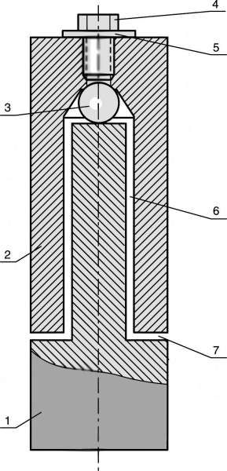
Рис 4.1.7.2. Шарнир гаражной петли:
1 — нижняя часть петли; 2 — верхняя часть петли; 3 — шарик; 4 — болт-заглушка; 5 — шайба; 6 — радиальный зазор; 7 — осевой зазор
В частности, при закрытых воротах зазоры перекрываются обшивкой створок, а на косяках — специально приваренными к ним отрезками стального уголка 30 ? 30 мм. Чтобы закрыть щель между створками, на одну из них можно установить металлическую полоску шириной 70–80 мм на всю высоту ворот. Иногда нахлест для перекрытия щели образуется обшивкой одной из створок. Запас перекрытия должен составлять не менее 3 см. Чтобы утеплить металлические ворота, обшивку листами делают с обеих сторон каркаса (листы с внутренней стороны не обязательно стальные), а внутри помещают плиты из пенопласта или минеральной ваты.
Навешивают створки распашных ворот на раму при помощи силовых гаражных петель.
Хорошо зарекомендовала себя на практике конструкция шарнира гаражных петель, показанная на рис. 4.1.7.2. Шарнир состоит из двух частей, нижняя из которых жестко закреплена на косяке, а верхняя — на створке. Для легкого вращения внутрь шарнира помещен шарик ?8–12 мм от подшипника. При этом размеры частей шарнира выбирают с таким расчетом, чтобы в собранном положении между ними обязательно оставался осевой зазор в 2–3 мм. Отсутствие зазора приводит к тому, что шарик не выполняет своей функции. Диаметр стержня шарнира должен быть обязательно меньше диаметра соответствующего отверстия, то есть после сборки в шарнире должен оставаться гарантированный радиальный зазор. Его назначение — компенсировать несоосность частей шарнира, которая неизбежно появится при сборке ворот в результате деформаций и неточностей установки деталей. Если такого зазора не предусмотреть, то стержень шарнира будет испытывать большие напряжения при открывании и закрывании створок, что затрудняет пользование воротами и приводит к преждевременному выходу шарнира из строя.
Для обеспечения легкого вращения и предохранения от коррозии любые петли необходимо периодически смазывать. В рассмотренном случае для этого используется резьбовое отверстие, закрытое болтом — заглушкой. Под головку болта поставлена нужной толщины шайба из алюминия или пластмассы, предохраняющая шарнир от попадания воды. Лучшая смазка для этой цели — графитная, но можно применять и солидол. Производить смазку следует хотя бы раз в год.
Запирание ворот.Запоры ворот — наиболее важный элемент их конструкции. Традиционно на гаражные ворота устанавливают два замка: один врезной, другой — навесной. И тот и другой не достаточно надежны. Все-таки лучше, когда ворота запираются изнутри на мощный засов, установленный посредине, и имеются вертикальные штыревые стопоры вверху и внизу на каждой створке. Вход в гараж в этом случае делают через отдельную дверь или предусмотренную в воротах калитку. В конструкции ворот крайне необходимо предусмотреть также стопоры для фиксации створок ворот в открытом положении.
Замки для запирания гаража должны быть удобными в пользовании и, конечно, достаточно надежными. Известен следующий способ повышения надежности запорного устройства. Висячий замок вешают не снаружи, а изнутри гаража, для чего петли для дужки замка приваривают с внутренней стороны створок (рис. 4.1.7.3). Доступ к замку в этом случае осуществляется одной рукой через дополнительный лючок в створке с минимальными размерами, чтобы можно было лишь просунуть руку. Закрывается этот лючок своей крышкой и на собственный замок. Такой способ запирания создает определенные затруднения в манипуляциях с замком, например, при подборе ключа, перепиливании или перекусывании дужки замка.
Только систематический уход за замками может гарантировать их долговечность и безотказность в работе. Прежде всего замки надо предохранять от влаги. Вода, попавшая в замочную скважину, в холодное время года замерзает, и ключ невозможно вставить без предварительного обогрева замка. Наиболее подвержены замерзанию замки с цилиндровым механизмом. Периодически замки необходимо смазывать. Лучший смазочный материал — это графитный порошок, который можно получить из мягкого обычного карандаша. Порошок вдувают в замочную скважину через бумажную трубку или вносят на ключе. Можно использовать и другие виды смазок, в том числе и минеральные масла — веретенное или трансформаторное. Если замок уже замерз, хорошо помогает специально предусмотренное для этого случая масло на спиртовой основе.
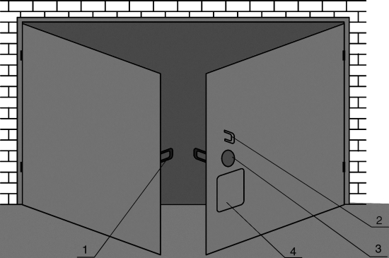
Рис 4.1.7.3. Устройство запирания ворот изнутри:
1 — внутренние петли для дужки висячего замка; 2 — наружная петля для дужки висячего замка; 3 — лючок в створке ворот; 4 — крышка лючка
Традиционно распашные гаражные ворота являются наиболее распространенными, но не потому, что они самые лучшие, а потому, что самые простые. Такие ворота обладают рядом существенных недостатков. Во-первых, открытые створки часто самостоятельно закрываются от ветра, что может привести к повреждению автомобиля во время заезда или выезда. Чтобы избежать этого, часто прибегают к различным фиксирующим устройствам, которые удерживают ворота в открытом положении. Во-вторых, при наличии перед гаражом снежного покрова или наледи часто невозможно открыть ворота. Поэтому сегодня самыми прогрессивными считаются подъемно-поворотные и секционные ворота, лишенные недостатков распашных ворот. Хороши они и прочностью, и стойкостью против взлома, и легкостью открывания в ручном и автоматическом режимах.
Принцип действия подъемно-поворотных ворот заключается в том, что плоское полотно ворот, закрывающее всю площадь воротного проема, поднимается и укладывается под потолком специальным шарнирно-рычажным механизмом. Равновесие в разных фазах подъема обеспечивается боковыми пружинами в защитных чехлах. Поворот полотна происходит практически бесшумно, поскольку на привод установлен газовый амортизатор. При этом скольжение происходит благодаря специальным шасси из синтетического материала. В секционных воротах створка открывается вертикально вверх и тоже убирается под потолок. Полотно ворот не цельное, а состоит из секций, шарнирно соединенных между собой. Специально разработанный стык в шпунт смежных секций ворот препятствует проникновению дождя и ветра. На нижней секции предусмотрен резиновый уплотнитель, который плотно прилегает к полу гаража. В большинстве случаев секции и полотна импортных ворот сделаны по типу сандвича: с двух сторон стальной лист толщиной от 0,5 мм до 1,0 мм, а внутри — полистирольный утеплитель толщиной до 50 мм.
Для того чтобы гаражные ворота служили долго и сохраняли привлекательный внешний вид, ведущие фирмы используют новейшие разработки для защиты металла от коррозии. Так, стальной лист, используемый для изготовления ворот, проходит двухстороннюю обработку в несколько этапов: горячее цинкование, грунтовку, нанесение краски. Технология горячего цинкования обеспечивает получение более толстого слоя цинка на поверхности листа, чем при электролитическом цинковании. После цинкования все стальные листы покрывают с двух сторон эпоксидной грунтовкой, на которую наносят слой полиэстерового красителя. Силиконовая термопрослойка, отделяющая наружный лист секции от внутреннего, обеспечивает максимальную термоизоляцию. Некоторые производители в качестве утеплителя ворот используют толстый слой пенополиуретана, что соответствует теплопроводности кладки в полтора кирпича.
Гаражные ворота могут открываться и закрываться вручную или электроприводом. Под действием торсионной пружины ворота находятся в сбалансированном состоянии и требуют всего от 6,5 до 10 кг усилия для приведения их в действие. В автоматическом режиме ворота открываются и закрываются электродвигателем небольшой мощности (1 кВт, 220 вольт), который управляется портативным дистанционным пультом с расстояния до 60 м или стационарной кнопочной станцией, расположенной внутри гаража. Ведущие фирмы — производители гаражных ворот устанавливают в механизм привода систему безопасности, а также блокиратор его действия. В первом случае исключается возможность травматизма и повреждения автомобиля. То есть автоматика устроена так, что, если при закрывании ворота встречают препятствие, они моментально срабатывают на возврат. Во втором случае предусмотрена такая характерная для наших условий особенность, как отключение электроэнергии, поэтому конструкция ворот дает возможность легко переходить на ручной режим.
В настоящее время на российском рынке представлены гаражные подъемно-поворотные и секционные ворота известных западных фирм-производителей: HORMANN (Германия), NORMSTAHL (Швейцария), MESVAC (Финляндия), HERMLINE (Голландия), CLOPAU (США), продукция которых способна удовлетворить все запросы потребителей.
Движение ворот осуществляется с помощью системы рычагов с пружинами и роликов, откатывающихся по направляющим металлическим рейкам. При этом верхний край створки движется внутри гаража, а нижний оказывается у верхней кромки косяка ворот. Вместе с перемещением ворот изменяется и состояние компенсирующих пружин: в закрытом положении створки они растянуты, в открытом — почти свободны.
Автоматические гаражные ворота с дистанционным управлением хоть и дороже обычных, однако, их преимущества неоспоримы. Не зря, завоевав весь мир, и у нас появились гаражи с автоматическими воротами, которые открываются из машины простым нажатием кнопки дистанционного управления. Автоматика не только открывает ворота, но и включает освещение, что избавляет от необходимости отыскивать в темноте выключатель. Кроме того, такие ворота безопасны, а открываются и закрываются бесшумно.
Ворота из оцинкованной горячим способом листовой стали можно приобрести в комплекте с электрическим приводным механизмом. В этом случае самостоятельные работы сводятся к монтажу и отладке закупленного оборудования.
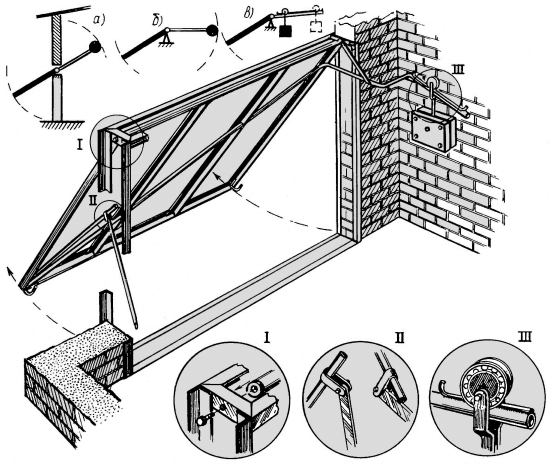
Рис 4.1.7.4. Подъемно-поворотные ворота конструкции М. Згута и А. Иконникова
Единственным недостатком таких ворот является их цена. Отсюда и стремление многих умельцев изготовить гаражные ворота подъемно-поворотного типа своими руками. Свое решение этой технической задачи предлагают М. Згути А. Иконниковиз Рязанской области.
Естественно стремление, чтобы при относительной простоте изготовления створка подъемных ворот, вес которой вразличных исполнениях может достигать 250 кг, не требовала больших усилий при перемещении. Решено было ориентироваться на компенсирующие грузы. Створку можно уравновесить частично или полностью с помощью рычага с соответствующей массой на конце (поз. а на рис. 4.1.7.4). Чем длиннее рычаг, тем меньшим весом контргруза можно обойтись и тем меньшей окажется суммарная нагрузка на опоры оси поворота. Трудность, однако, заключается в том, что высота гаража обычно невелика и применить длинный рычаг в таких условиях невозможно.
Казалось бы, естественная попытка установить рычаг с контргрузом под некоторым углом к створке ворот приводит к тому, что равновесие будет только в одном, вполне определенном положении, а отклонение от этого положения потребует усилия тем большего, чем сильнее это отклонение (поз. б на рис. 4.1.7.4).
Мы сочли целесообразным применить схему с изогнутым коромыслом, но с перекатывающимся грузом (поз. в на рис. 4.1.7.4). При частично прикрытой створке, которую нетрудно закрыть полностью, груз располагается поблизости от оси вращения створки, а при полностью раскрываемой створке он максимально удаляется к концу рычага. Стоит освободить запоры, истворка самаприоткрывается примерно на 15° . После этого створку с небольшим усилием продолжают открывать и при 40–45° груз перекатывается к концу рычага, вследствие чего происходит самопроизвольное почти полное открытие ворот.
В реально сделанной конструкции створка ворот размером 2200? 2000 мм сварена из стального уголка 45? 45 мм так, что образуется рама с ребрами. К этому каркасу приварена листовая сталь толщиной 1,5 мм. К верхней части створки приварена дюймовая труба. Ее торцы снабжены заглушками, в которые входят болты 12 мм. Болты ввернуты в уголки, образующие коробку ворот.
Рычаг представляет собой дюймовую трубу, изогнутую или сваренную коленом, что дает возможность разместить груз сбоку у самой стены гаража. Сверху к свободному концу рычага приварен пруток? 8 мм, по которому может кататься ролик контргруза. Этот ролик сделан точеным с ручьем. Сам рычаг, чтобы несколько разгрузить каркас створки, проходит по ее диагонали.
В целях страховки с левой стороны створки предусмотрен «ломающийся» упор, который фиксируется при полном открытии. Изготовлен он из трубы? 3/4?. Чтобы подобрать его членение, нужно назначить на коробке и створке ворот точки установки шарниров упора, затем отрезком веревки при открытой створке отмерить ее длину, после чего закрыть створку. Сохраняя точки шарниров,надо определить место сгиба с таким расчетом, чтобы упор в сложенном виде занимал желательное положение. В точке сгиба упора к одному его колену приварен хомут, в силу чего точка сгиба оказывается отнесенной за нейтраль. Благодаря этому исключается самопроизвольное складывание упора. В нашей конструкции запоры находятся внутри гаража, а снаружи оказывается гладкая створка.
4.1.8. Открытая автостоянкаДаже при наличии гаража крайне желательна на загородном участке еще и открытая автостоянка и причин тому достаточно много. Например, приезд гостей, которым где-то нужно поставить свой автомобиль, дабы не мешать прочему населению, каковую вредную привычку можно наблюдать повсеместно. Или гараж понадобился в качестве мастерской для производства каких-либо работ, а при наличии в нем авто это становится просто не реальным. Наконец, потребовалось завести и пусть даже временно складировать в защищенном от атмосферных влияний месте сколько-нибудь значительные объемы стройматериалов, для чего гараж является идеальным вариантом.
Можно, конечно, постоять и «на травке», но даже при небольшом уклоне в сырую погоду на глинистой почве это мгновенно становится проблемой. Возникают и еще вопросы, например: куда девать глину, образующуюся при различных хозяйственных и строительных работах на участке? Избавляться от нее зачастую — дело хлопотное, а ведь можно использовать ее, что называется, во благо, в частности, для строительства автостоянки.
Вот реальный случай. Еще до начала рытья колодца была запланирована автостоянка, побочной целью строительства которой было желание избавиться как от вынимаемого грунта, так и от накопившихся строительных отходов. Именно эти отходы в первую очередь легли в основание будущей площадки и изначально определили ее контур. При рытье колодца на имеющем уклон участке глина была выложена клином, имеющим обратный исходному уклон. Клин был обрамлен образовавшимися при реорганизации другого участка обломками бетона, утилизация которых также представляла проблему.
Поскольку давно известно, что перед использованием глины в дело ее крайне желательно выдержать зимой в валках на природе, подготовленная таким образом площадка была оставлена «до будущей весны». На следующий год глина действительно уплотнилась под влиянием атмосферных явлений и первичное трамбование существенно упростилось, а результат и явился исходным полем для дальнейшей работы (фото 4.1.8.1).
Работа была начата с засыпки всей рабочей площади песком с проливкой водой и, естественно, с трамбованием (фото 4.1.8.6).
На полученную в итоге площадку и предстояло уложить завезенную тротуарную плитку.
При укладке плитки потребовалось соблюдать довольно много различных геометрических параметров и размеров. Первое — нужно было отбить ровную кромку, для чего использовался ровный брусок.
Потребовался и шаблон в виде тонкой дощечки для выдерживания одинаковых зазоров между плитками, а следовательно, и постоянства ширины каждой полосы по всей длине.
Само собой требуемый уклон всей площадки проверялся большим уровнем, а поперечный уклон каждой полосы, также заданный заранее, проверялся уровнем поменьше (фото 4.1.8.2).
Песок подсыпался по мере надобности и киянками резиновой или деревянной плитки устанавливались в требуемое положение. Понадобился и мастерок для подсыпки и уплотнения песка в швах.
Процесс продвигался, и площадка приобретала требуемые очертания. Вот уже и определились две запланированные полосы, одну из которых предстоит завершить, после чего следует сделать плавный заезд — что-то типа пандуса.
Укладка плитки завершена, пандус, образованный крупными камнями с просыпкой гравийно-песчаной смесью с последующей мокрой трамбовкой пандус готов. В завершение площадка присыпана песком для уплотнения межплиточных швов атмосферными осадками, что впоследствии себя и оправдало.
Из произведенного в достаточном количестве боя тротуарной плитки выкладывается задний упорный буртик, призванный подстраховать автомобиль от крайне нежелательного сползания с площадки при движении задним ходом.
А вот и серьезная проверка «на дорогах» оттепельной зимой 2011 года. Площадка выглядит если и не идеально, то вполне приемлемо (фото 4.1.8.3).